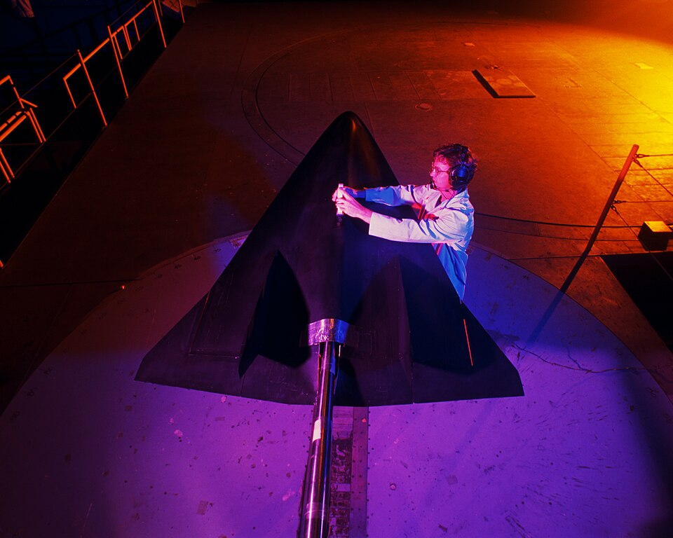

Reynolds, Mach y Froude: los números que deciden cómo se mueve un fluido, sin importar su tamaño
¿Cómo puede un modelo de un barco de un metro, en un canal de laboratorio, decir algo sobre un barco de cien metros en el mar? La respuesta es una de las ideas más útiles de la mecánica de fluidos: lo que decide cómo se mueve un fluido no es el tamaño ni la velocidad por separado, sino unas pocas combinaciones de ellas que no tienen unidades. Si esas combinaciones coinciden, dos flujos de tamaños muy distintos se comportan igual.
Osborne Reynolds lo planteó con claridad en 1883. Como en la mecánica no hay un espacio ni un tiempo absolutos, escribió, suponer que el carácter del movimiento de un fluido depende del tamaño absoluto o de la velocidad absoluta sería ponerlo fuera de las leyes del movimiento. Lo que parece depender del tamaño del tubo tiene que depender, en realidad, del tamaño del tubo comparado con otro, y la velocidad, comparada con otra velocidad [1].
Cada número adimensional de los fluidos compara dos efectos que compiten. Los tres más usados son estos:
El número de Reynolds dice si el flujo en un tubo es ordenado o turbulento: según OpenStax, por debajo de unos 2000 el flujo es laminar y por encima de unos 3000 es turbulento [2]. Reynolds llegó a él estudiando por qué el agua a veces fluye en hilos ordenados y a veces en remolinos; tiene su propio artículo, el del número de Reynolds. El número de Mach dice si importa la compresibilidad del gas: la NASA advierte que es completamente incorrecto medir un coeficiente de arrastre a baja velocidad y aplicarlo al doble de la velocidad del sonido, porque la compresibilidad cambia la física entre los dos casos [3]. El tercero compara la gravedad con la inercia y aparece, por ejemplo, en el problema de la hélice de un barco que estudió Buckingham, que se describe más abajo [4].
En 1914, Edgar Buckingham le dio forma general a este razonamiento. Si un problema involucra n magnitudes y para medirlas hacen falta k unidades fundamentales, la relación entre ellas siempre se puede escribir como una relación entre n − k productos adimensionales independientes [4]. En lugar de explorar el efecto de cada variable por separado, alcanza con explorar esos pocos números. La demostración, con el ejemplo del péndulo y la estimación de G. I. Taylor de la energía de la primera bomba atómica, está en el artículo sobre análisis dimensional.
De ahí sale la idea de sistemas físicamente semejantes: si dos sistemas tienen los mismos valores de todos sus productos adimensionales, se comportan igual a escala [4].
La receta: una receta que dice «dos partes de harina por una de agua» funciona igual si medís en tazas, en gramos o en baldes. Lo que importa es la proporción. Los números adimensionales son las proporciones de la receta de un flujo: si coinciden, el resultado es el mismo, aunque cambie el tamaño de la olla.
Buckingham ya lo veía como una herramienta práctica: el razonamiento dimensional permite interpretar ensayos con modelos que dan información, a un costo comparativamente bajo, sobre máquinas de tamaño real [4]. Su ejemplo era la hélice de un barco. Si el empuje depende del diámetro D, de la velocidad de avance S, de las vueltas por unidad de tiempo n, de la densidad ρ y la viscosidad μ del agua y de la gravedad g, el comportamiento queda gobernado por tres combinaciones: Dn/S, ρDS/μ y Dg/S². Si las tres se mantienen iguales, el empuje de una hélice de forma dada es proporcional a ρD²S², y lo medido en un modelo se puede escalar a la hélice real [4].
si los tres primeros coinciden en modelo y hélice real, el cuarto también
Por eso existen los túneles de viento y los canales de ensayo: en ellos se busca reproducir los números adimensionales del objeto real. La NASA lo subraya para el número de Mach: en un túnel de viento hay que igualar con cuidado el Mach del ensayo y el del vuelo [3].

El problema es que a veces los números piden cosas opuestas. Supongamos un modelo de barco diez veces más chico que el real, en el mismo agua y con la misma gravedad. Para que el número de Froude, Dg/S², sea el mismo, la velocidad del modelo tiene que ser √10 veces menor, unas 3,2 veces. Para que el número de Reynolds, ρDS/μ, sea el mismo, la velocidad del modelo tendría que ser diez veces mayor. No se pueden cumplir las dos cosas a la vez (es un cálculo propio con las combinaciones de Buckingham). En la práctica se iguala el número más importante para el fenómeno estudiado y se corrige el resto con métodos empíricos.
Más viscoso, menos remolinos: Reynolds notó en 1883 que cuanto más viscoso es un fluido, menos propenso es a formar remolinos, y que en el agua la tendencia a formar remolinos crece mucho al subir la temperatura, porque su viscosidad baja [1]. Es la primera pista de que la viscosidad tenía que estar en el número que buscaba.
Los números adimensionales son la manera en que la mecánica de fluidos se libra de las unidades y de los tamaños. Permiten ordenar los flujos en regímenes, predecir el comportamiento de un avión con un modelo de laboratorio y saber cuándo una simplificación vale. Y muestran, como intuía Reynolds, que la naturaleza no distingue entre grande y chico, sino entre proporciones.
Pregunta para la comunidad: Querés estudiar en un laboratorio un modelo de un tornado mil veces más chico que el real. ¿Qué números adimensionales tratarías de igualar? ¿Cuál sacrificarías si no pudieras igualarlos a todos?